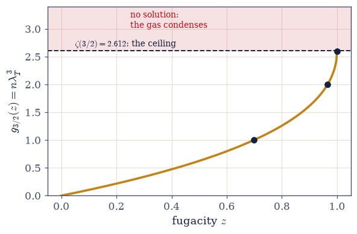
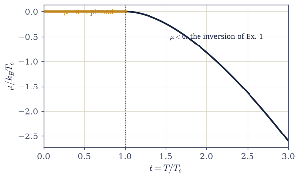
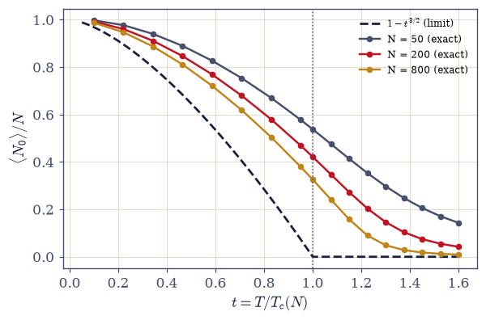
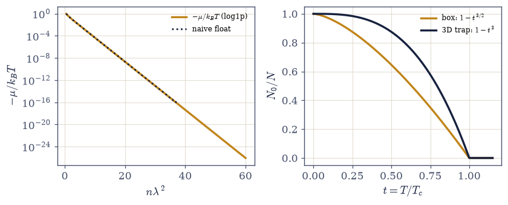
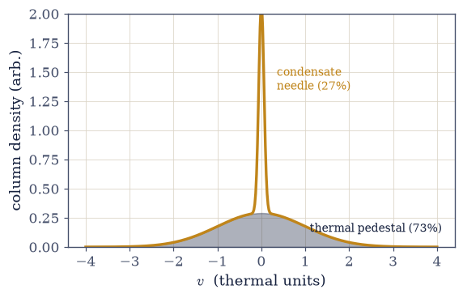
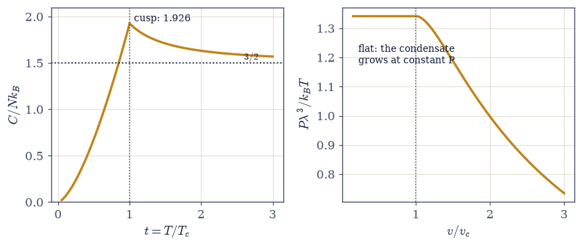

7.17 Bose–Einstein Condensation: The Ceiling Saturates#
Notebook overview#
This is the notebook the volume has been arming since its arsenal. §7.3 proved that the Bose integral \(g_{3/2}(z)\) is bounded (it climbs to \(\zeta(3/2) = 2.612\) at \(z = 1\) with a vertical tangent and can go no further) and flagged the fact for later. §7.7 derived the fugacity ceiling \(\mu < \varepsilon_{\min}\) the day the distributions were born, and flagged it loudly. §7.8 drew the degeneracy criterion \(n\lambda^3 \sim 1\) as a map. Photons (§7.14) and phonons (§7.16) then walked past the whole apparatus, because their number was unconserved and \(\mu = 0\) came free. Here, at last, the boson number is conserved, and the conservation is the entire story. Fixed \(N\) demands \(n\lambda^3 = g_{3/2}(z)\); the right side is bounded; cool or squeeze the gas past \(n\lambda^3 = 2.612\) and the equation simply runs out of solutions (verified bluntly below: solvable at 2.6 with \(z = 0.999988\), no solution at 3.0). The failure has a precise cause, stated as a crime and its correction: the continuum density of states \(\sqrt\varepsilon\) assigns the \(\varepsilon = 0\) ground state zero statistical weight: the integral cannot see the one state that matters most. Count that state separately (Einstein, 1925, building on Bose’s photon counting) and the books heal: below \(T_c\) the fugacity pins at the ceiling, the excited states saturate, and the ground state absorbs a macroscopic remainder, \(N_0/N = 1 - (T/T_c)^{3/2}\): the only phase transition in physics driven by counting alone, with no interactions anywhere.
The centerpiece makes the thermodynamic-limit story answer to an exact computation: the
canonical recursion \(Z_N = (1/N)\sum_k Z_1(k\beta)Z_{N-k}\), exact for ideal bosons at fixed
\(N\), implemented in logarithms with scipy.special.logsumexp on ground-shifted box levels,
delivering the exact condensate \(\langle N_0\rangle(T)\) for \(N = 50\), \(200\), and \(800\) atoms.
The transition visibly assembles itself: the above-\(T_c\) tail collapses as \(N\) grows while
the finite gas hoards condensate below \(T_c\), and the whole exercise doubles as the ensemble equivalence of §7.7
re-examined at the hardest possible place. The density of states then
decides which worlds condense: a 2D box inverts analytically to \(\mu < 0\) for every finite degeneracy (no ceiling, no condensation, and a float-precision subtlety worth its own demonstration), yet a 2D harmonic trap condenses, and the 3D trap obeys its own law
\(k_BT_c = \hbar\bar\omega(N/\zeta(3))^{1/3}\) with fraction \(1 - t^3\): the formula the 1995 experiments actually measured (123 nK at JILA scale, computed). The data anchor behind it all
is London 1938: the ideal-gas \(T_c\) at liquid helium’s density lands at 3.13 K beside the measured \(\lambda\)-point at 2.17 K, close enough that London dared connect them, with the
honest footnote that neutron scattering finds real helium’s condensate fraction at only
7–10%. The thermodynamics carries the signature: a heat-capacity cusp at
\(1.9257\,Nk_B\) (continuous to four digits, then descending to \(3/2\) from above), and below
the transition a pressure that does not depend on the volume at all: flat isotherms, because the condensate pushes on nothing.
Conventions (this notebook). The reduced temperature is \(t = T/T_c\) throughout. The exact-recursion exercise runs in box units \(\varepsilon = n_x^2+n_y^2+n_z^2\) (i.e. \(\hbar^2\pi^2/2mL^2 = 1\), \(k_B = 1\)), with the single-particle ground energy shifted to zero (the stabilization: \(Z_1(k\beta) \ge 1\) always) and its box-unit \(T_c(N) = [8N/\pi^{3/2}\zeta(3/2)]^{2/3}\) derived in place; the data anchors run in SI. Polylogarithms \(g_s(z)\) come from
mpmath.polylog(the validated route of §7.3, cast to float); fugacity inversions usescipy.optimize.brentqwith the upper bracket at \(1 - 10^{-14}\) (a smaller margin misses roots when \(n\lambda^3\) approaches 2.612 — stated). Near the ceiling we compute \(\mu\), never \(z\): quantities like \(1 - z \sim 10^{-22}\) underflow the double next to 1 while \(\mu\) remains finite and negative (numpy.log1pis the right tool; demonstrated once, then standing). The \(g_{1/2}\) divergence at \(z = 1\) means the above-\(T_c\) heat capacity is evaluated only at \(t > 1\) with a stated margin — continuity is proven by limits, never by evaluating at the ceiling. Finite-size numbers are quoted with their \(N\): the hoarding and the tail are \(N\)-dependent facts, not sloppiness.How to read the checks. Each exercise closes with a
validatecall against an independent fact: the fugacity inversion agreeing with stated values below the ceiling and failing explicitly above it; London’s 3.13 K; the exact recursion’s tail collapsing monotonically with \(N\) while the below-\(T_c\) curves hoard above the limit law; the 2D underflow demonstration; the 123 nK; the cusp continuous to four digits. A ✓ is strong evidence; a ✗ is a prompt to locate the discrepancy.Scope. Interactions (Gross–Pitaevskii, healing lengths, vortices), superfluid helium’s two-fluid hydrodynamics, BCS pairing as the fermionic echo, photon BEC in dye microcavities (the caveat of §7.14), and polaritons are named horizons. See Einstein 1925; London 1938; Anderson et al. 1995 and Davis et al. 1995 (Nobel 2001); Pathria & Beale (Ch. 7); Pethick & Smith, Bose–Einstein Condensation in Dilute Gases. Cross-reference §7.3 (the bounded integral and the constant-DOS flag, both decisive here), §7.7 (the ceiling; ensemble equivalence), §7.8 (the criterion, now a phase boundary), §7.14/§7.16 (the \(\mu = 0\) gases, contrasted), §7.9 (the fermionic counter-verdict), §5.10 (singularities live in the limit), and forward to §7.18/§7.19 (Movement V: quantum spins and criticality) and §7.20/§7.21 (this gas again, by path integrals).
Theory in brief#
The ceiling, and the integral’s crime#
The factorized boson gas of §7.7 plus the integral of §7.3 turn particle conservation into one equation:
The left side grows without bound as the gas cools (\(\lambda_T \propto T^{-1/2}\)) or is
compressed; the right side cannot follow: §7.3 proved \(g_{3/2}\) reaches its ceiling at \(z = 1\) with a vertical tangent and stops. Below the ceiling the inversion is routine
(brentq; verified: \(z = 0.6986\), \(0.9656\), \(0.999988\) at \(n\lambda^3 = 1\), \(2\), \(2.6\));
at \(n\lambda^3 = 3.0\) no solution exists. The failure has a precise cause. The continuum
density of states \(g(\varepsilon) \propto \sqrt\varepsilon\) assigns the \(\varepsilon = 0\)
ground state zero weight: the integral literally cannot see the one state that matters most.
A continuum approximation is an excellent servant for sums over many thermally-blurred levels
and an outright criminal for a single level about to hold half the particles.
Einstein’s correction, and what condenses#
Count the invisible state separately:
Below the saturation temperature the fugacity pins at \(z = 1^-\) (the ceiling reached, never crossed; \(\mu \to 0^-\)): the excited states hold all they can, \((V/\lambda^3)\zeta(3/2)\), and the ground state absorbs the macroscopic remainder. Note what the phase boundary is: \(n\lambda_T^3 = \zeta(3/2)\) is exactly the degeneracy criterion of §7.8 with its constant computed: the map’s line, crossed at last. And note what condensed: not a droplet in space but a macroscopic occupation of the \(k = 0\) mode, condensation in momentum space. In the language of §7.8, the thermal wavelength has grown past the interparticle spacing until the wavepackets fuse into a single coherent object the size of the container. The history fits in two sentences: Bose counted photon states in 1924; Einstein extended the counting to conserved atoms in 1925 and saw the transition; the prediction then sat, unrealized, for seventy years.
London’s number (data)#
The critical temperature just derived asks for nothing but a particle mass and a number density (no interaction parameter appears anywhere), so it can be evaluated for any real fluid one dares to model as an ideal gas. The first such evaluation on record reads:
In 1938 London evaluated Einstein’s formula at liquid helium’s density and found it beside the freshly-discovered \(\lambda\)-point: a zero-interaction caricature landing within fifty percent of a strongly interacting liquid’s transition, close enough that he dared identify the two. The honesty attaches immediately: neutron scattering finds real He-4’s condensate fraction only \(\sim\)7–10% even as \(T \to 0\) (interactions deplete the condensate without destroying the transition), and superfluidity is related to, not identical with, BEC (the two-fluid model is the outward name).
The exact finite gas: the canonical recursion#
Everything so far has lived in the grand canonical ensemble and the thermodynamic limit. The centerpiece needs the canonical partition function of a finite gas at fixed \(N\), and for ideal bosons symmetrization hands it over in closed recursive form:
Exact for ideal bosons at fixed \(N\): the recursion organizes the permanent over symmetrized states by cycle lengths \(k\), each cycle contributing a single-particle partition
function at inverse temperature \(k\beta\) (the cycle-sum origin, credited to Landsberg’s and
Borrmann–Franke’s treatments). It is also a numerical minefield crossed with two disciplines:
the recursion must run in logarithms (scipy.special.logsumexp at every step; naive floats overflow as roughly \(Z_1^N\)), and the levels must be ground-shifted to \(\varepsilon_0 = 0\)
(so \(Z_1(k\beta) \ge 1\) for every \(k\); unshifted energies underflow at large \(k\)). The
payoff is a phase transition watched exactly as it assembles: above \(T_c\) the condensate
tail collapses with \(N\); below \(T_c\) the finite gas hoards condensate above the limit curve;
the approach is slow (\(\sim N^{-1/3}\)) and the finite-size \(T_c\) sits high. A “phase transition” in fifty atoms is a crossover; singularities live only in the thermodynamic limit (the lesson of §5.10, quantum edition), and this is the ensemble equivalence of §7.7 re-examined at
a phase transition, the hardest place there is.
The DOS decides: dimension and confinement#
The whole condensation argument used the 3D box at exactly one step: its \(\sqrt\varepsilon\) density of states picked which polylogarithm does the counting, and that polylogarithm happened to be bounded. Change the dimension or the confinement and the verdict can flip either way:
In a 2D box the density of states is constant (the flag of §7.3) and the inversion is analytic: \(n\lambda^2 = g_1(z) = -\ln(1-z)\), unbounded, so \(\mu\) stays strictly negative at every finite degeneracy and nothing condenses (for the interacting case the outward name is Mermin–Wagner). Confinement rewrites the verdict: a 2D harmonic trap has \(g(\varepsilon) \propto \varepsilon\), whose integral \(g_2(z)\) is bounded (by \(\zeta(2)\)), so trap BEC exists; the 3D trap has \(g \propto \varepsilon^2\) and its own law. The general rule: a density of states \(\propto \varepsilon^\alpha\) hands the counting to \(g_{\alpha+1}\), which is bounded iff \(\alpha > 0\)… precisely: condensation occurs iff \(g_{\alpha+1}(1)\) converges, and the fraction is \(1 - t^{\,\alpha+1}\). Condensation is a property of the density of states, not of bosons per se.
1995 (data)#
The experiments that finally realized the transition held their atoms not in a box but in a magnetic trap, so the trap law of the previous section is the one nature was asked to obey; at the parameters of the first rubidium experiment it gives
the JILA scale. Why the seventy-year wait: \(T_c \propto n^{2/3}/m\), and a gas that must stay gaseous must stay dilute, hence cold beyond any cryostat; it took laser cooling plus evaporative cooling to reach it. The smoking gun was the bimodal time-of-flight velocity distribution: a broad thermal pedestal with a needle growing at \(v = 0\) (Anderson et al., rubidium; Davis et al., sodium; Nobel 2001). The atom laser and matter-wave interference are the outward cousins of the stimulated amplification of §7.15.
Thermodynamics of the transition#
A transition must leave marks on measurable thermodynamics. Differentiating the energy of the boson gas of §7.7 on each side of \(T_c\), and reading the pressure from the same expressions below it, yields the signature (Pathria & Beale, Ch. 7, carries the full derivations):
Below \(T_c\) everything is a \(z = 1\) polylogarithm and \(C\) rises as \(t^{3/2}\) to \(1.9257\); above, the \(g_{1/2}\) divergence kills the second term as \(t \to 1^+\) (continuity to four digits: 1.9256 at \(t = 1.0001\)) and the curve descends to \(3/2\) from above: a cusp, a genuine maximum at \(T_c\) with a slope discontinuity. Helium’s \(\lambda\)-point, by contrast, diverges logarithmically: the Greek letter belongs to the interacting liquid; the ideal cusp is its caricature, right about location and scale, wrong about shape. And the pressure makes the transition mechanical: below \(T_c\), \(P\) contains no density at all: compressing the gas at fixed \(T\) just files more particles into the condensate at constant pressure. Flat isotherms, a coexistence-like plateau, the condensate as a zero-pressure phase: it sits at \(k = 0\) and carries no momentum flux. Set it beside the degenerate fermions of §7.9 pushing with gigapascals at \(T = 0\): the two statistics’ zero-temperature verdicts, side by side.
Setup#
import matplotlib.pyplot as plt
import mpmath
import numpy as np
from scipy.optimize import brentq
from scipy.special import logsumexp, zeta
from ecp import draw, validate
ACCENT, INK, SOFT = draw.ACCENT, draw.INK, draw.SOFT
RED = "#c1121f"
# Constants (SI, for the data anchors) and the volume's polylog conventions (§7.3).
from scipy.constants import hbar as HBAR # J·s
from scipy.constants import k as KB # J/K (exact)
from scipy.constants import m_u as U_AMU # atomic mass constant, kg
ZETA_32 = float(zeta(1.5)) # 2.612...
ZETA_52 = float(zeta(2.5))
ZETA_3 = float(zeta(3.0))
N_HE4 = 2.18e28 # liquid He-4 number density, m^-3 (London's input; standard value)
M_HE4 = 4.002602 * U_AMU
Z_BRACKET_TOP = (
1.0 - 1e-14
) # brentq upper end: any smaller margin misses roots near 2.612
def g_poly(s, z):
"""The Bose–Einstein function g_s(z) = polylog(s, z), by mpmath (the validated route of §7.3).
mpmath.polylog wants a plain float (numpy.float64 triggers its complex branch —
the recorded trap of §7.8), and returns an mpf for 0 ≤ z < 1, cast here to float.
Used for s = 1/2, 3/2, 5/2; g_{1/2} diverges as z → 1 and is only ever
evaluated at a stated margin below the ceiling.
Parameters
----------
s : float
Polylog order.
z : float
Fugacity, 0 ≤ z < 1.
Returns
-------
float
g_s(z).
"""
return float(mpmath.polylog(s, float(z)))
def solve_fugacity(nl3):
"""Invert nλ^3 = g_{3/2}(z) for z by scipy.optimize.brentq — or report failure honestly.
Bracket [1e-12, 1 − 1e-14]: g_{3/2} is monotone, so a root exists iff
nλ^3 < g_{3/2}(1 − 1e-14) ≈ ζ(3/2); above the ceiling the function returns
None EXPLICITLY (the no-solution case is the physics, not an error to hide —
Exercise 1 gates on it). The near-1 upper end matters: a lazier bracket like
1 − 1e-6 already misses the root at nλ^3 = 2.6.
Parameters
----------
nl3 : float
The degeneracy parameter nλ_T^3.
Returns
-------
float or None
The fugacity z, or None when the ceiling makes the equation unsolvable.
"""
if nl3 >= g_poly(1.5, Z_BRACKET_TOP):
return None
return brentq(lambda z: g_poly(1.5, z) - nl3, 1e-12, Z_BRACKET_TOP, xtol=1e-15)
def condensate_fraction(t, power=1.5):
"""The thermodynamic-limit condensate fraction N_0/N = 1 − t^power (t = T/T_c, t ≤ 1).
power = 3/2 for the uniform box (eq-condensate), 3 for the 3D harmonic trap
(eq-dos-decides): the exponent is the DOS power plus one, the general rule of
Exercise 5.
Parameters
----------
t : float or numpy.ndarray
Reduced temperature T/T_c.
power : float, optional
DOS-determined exponent (default 3/2, the uniform gas).
Returns
-------
float or numpy.ndarray
Condensate fraction (clipped at 0 above the transition).
"""
return np.maximum(1.0 - np.asarray(t, dtype=float) ** power, 0.0)
def Tc_uniform(n, m):
"""The uniform-gas critical temperature k_BT_c = (2πħ^2/m)(n/ζ(3/2))^{2/3}.
The degeneracy criterion of §7.8 nλ^3 = ζ(3/2) solved for T — the map's line as a
phase boundary. London's 1938 move is exactly this formula at liquid helium's
density.
Parameters
----------
n : float
Number density, m^-3.
m : float
Particle mass, kg.
Returns
-------
float
T_c in kelvin.
"""
return (2.0 * np.pi * HBAR**2 / m) * (n / ZETA_32) ** (2.0 / 3.0) / KB
def Tc_trap(N, wbar):
"""The 3D-harmonic-trap critical temperature k_BT_c = ħω̄ (N/ζ(3))^{1/3}.
The ε^2 density of states hands the counting to g_3, bounded by ζ(3) — the
law the 1995 experiments measured (eq-1995).
Parameters
----------
N : float
Atom number.
wbar : float
Geometric-mean trap frequency ω̄, rad/s.
Returns
-------
float
T_c in kelvin.
"""
return HBAR * wbar * (N / ZETA_3) ** (1.0 / 3.0) / KB
def box_levels(n_max):
"""Single-particle box levels ε = n_x^2+n_y^2+n_z^2 − 3, ground-shifted, with degeneracies.
numpy.meshgrid over n = 1..n_max per axis; the shift to ε_0 = 0 is the
recursion's stabilization (Z_1(kβ) ≥ 1 for every cycle length k — unshifted
energies underflow e^{−kβε_0} at large k). Returned as unique energies plus
counts, which shrinks the level list ~15× for free.
Parameters
----------
n_max : int
Quantum-number cutoff per axis (grid adequacy is checked in Exercise 4).
Returns
-------
tuple
(energies, degeneracies) as float and int arrays.
"""
n = np.arange(1, n_max + 1)
nx, ny, nz = np.meshgrid(n, n, n, indexing="ij")
eps = (nx**2 + ny**2 + nz**2 - 3).ravel().astype(float)
energies, counts = np.unique(eps, return_counts=True)
return energies, counts
def canonical_lnZ(energies, degens, N, beta):
"""The exact ideal-boson canonical recursion, in logarithms (eq-recursion).
ln Z_n = −ln n + logsumexp_k[ ln Z_1(kβ) + ln Z_{n−k} ], n = 1..N, with
ln Z_1(kβ) = logsumexp(−kβε, b=degens) precomputed for k = 1..N. Everything
stays in logs (scipy.special.logsumexp at every step): the naive-float
version overflows like Z_1^N within a few dozen atoms at any T above the
ground scale. Ground-shifted levels keep ln Z_1(kβ) ≥ 0 for all k.
Parameters
----------
energies : numpy.ndarray
Ground-shifted single-particle energies (ε_0 = 0 first).
degens : numpy.ndarray
Their degeneracies.
N : int
Particle number.
beta : float
Inverse temperature, box units.
Returns
-------
numpy.ndarray
ln Z_n for n = 0..N (ln Z_0 = 0).
"""
ks = np.arange(1, N + 1)
lnZ1 = np.array([logsumexp(-k * beta * energies, b=degens) for k in ks])
lnZ = np.empty(N + 1)
lnZ[0] = 0.0
for n in range(1, N + 1):
terms = lnZ1[:n] + lnZ[n - 1 :: -1][:n] # k = 1..n pairs with Z_{n−k}
lnZ[n] = logsumexp(terms) - np.log(n)
return lnZ
def ground_occupation(energies, degens, N, T):
"""Exact ⟨N_0⟩ at fixed N: Σ_k exp(ln Z_{N−k} − ln Z_N), the cycle read-off.
With the ground level shifted to ε_0 = 0 the Boltzmann factor of every
ground-state cycle is exactly 1, so the occupation collapses to a sum of
partition-function ratios — evaluated as exp of log differences, never as
raw Z's.
Parameters
----------
energies, degens : numpy.ndarray
Ground-shifted levels and degeneracies.
N : int
Particle number.
T : float
Temperature, box units.
Returns
-------
float
⟨N_0⟩.
"""
lnZ = canonical_lnZ(energies, degens, N, 1.0 / T)
return float(np.sum(np.exp(lnZ[N - 1 :: -1] - lnZ[N])))
def mu_2d(nl2):
"""The 2D-box chemical potential, analytically: μ/k_BT = log1p(−e^{−nλ^2}).
From nλ^2 = g_1(z) = −ln(1 − z): z = 1 − e^{−nλ^2}, so μ = k_BT ln z — and
near the ceiling the ONLY safe route is numpy.log1p on −e^{−nλ^2}: at
nλ^2 = 50, 1 − z ≈ 2e-22 underflows the double next to 1 (the naive
1 − exp(−50) rounds to exactly 1.0 and ln gives 0, i.e. false condensation),
while log1p keeps the full 2e-22. Exercise 5 demonstrates the failure and
the fix side by side. Strictly negative for every finite nλ^2: no 2D box BEC.
Parameters
----------
nl2 : float or numpy.ndarray
The 2D degeneracy parameter nλ_T^2.
Returns
-------
float or numpy.ndarray
μ/k_BT (dimensionless, < 0).
"""
return np.log1p(-np.exp(-np.asarray(nl2, dtype=float)))
def heat_capacity(t):
"""The uniform-gas C/Nk_B on both branches of eq-thermo-transition.
Below t = 1: the z = 1 closed form (15ζ(5/2)/4ζ(3/2)) t^{3/2}. Above: solve
z from g_{3/2}(z) = ζ(3/2) t^{−3/2} (brentq, the standing bracket) and
assemble (15/4) g_{5/2}/g_{3/2} − (9/4) g_{3/2}/g_{1/2}. g_{1/2} diverges at
the ceiling, so this branch is only ever called at t > 1: continuity at the
cusp is established by limits (t = 1.0001), never by evaluating at z = 1.
Parameters
----------
t : float
Reduced temperature T/T_c.
Returns
-------
float
C/(N k_B).
"""
if t <= 1.0:
return (15.0 * ZETA_52 / (4.0 * ZETA_32)) * t**1.5
z = solve_fugacity(ZETA_32 * t**-1.5)
g12, g32, g52 = g_poly(0.5, z), g_poly(1.5, z), g_poly(2.5, z)
return (15.0 / 4.0) * g52 / g32 - (9.0 / 4.0) * g32 / g12
print(
f"ζ(3/2) = {ZETA_32:.4f} — the ceiling; ζ(5/2) = {ZETA_52:.4f}; ζ(3) = {ZETA_3:.4f}"
)
print(
f"brentq upper bracket: 1 − 1e-14 (g_3/2 there = {g_poly(1.5, Z_BRACKET_TOP):.6f})"
)
ζ(3/2) = 2.6124 — the ceiling; ζ(5/2) = 1.3415; ζ(3) = 1.2021
brentq upper bracket: 1 − 1e-14 (g_3/2 there = 2.612375)
Exercise 1 — The ceiling bites#
The equation that runs out of solutions, and the precise crime that causes it. Cite Eq. 678.
Assemble \(n\lambda^3 = g_{3/2}(z)\) from the gas of §7.7 and the integral of §7.3, and implement
solve_fugacitywithscipy.optimize.brentqonmpmath.polylog(the near-1 bracket \([10^{-12}, 1-10^{-14}]\) stated).Verify the ceiling numerically: \(z = 0.6986\), \(0.9656\), \(0.999988\) at \(n\lambda^3 = 1\), \(2\), \(2.6\), and no solution at \(3.0\), handled explicitly rather than silently.
State the integral’s crime precisely: \(g(\varepsilon) \propto \sqrt\varepsilon\) weights the ground state zero: the continuum approximation fails at exactly one state, and it is the important one.
Plot the \(g_{3/2}(z)\) figure of §7.3 with the no-solution region shaded: the arsenal figure, now with teeth. (Computation + one prose sentence on the ten-notebook setup.)
nλ^3 = 1.0: z = 0.698614 (1 − z = 3.01e-01)
nλ^3 = 2.0: z = 0.965585 (1 − z = 3.44e-02)
nλ^3 = 2.6: z = 0.999988 (1 − z = 1.22e-05)
nλ^3 = 3.0: NO SOLUTION — the ceiling ζ(3/2) = 2.6124 is below the demand

Fig. 606 The arsenal figure, now with teeth. The bounded Bose integral of §7.3 \(g_{3/2}(z)\) (amber), climbing to its ceiling \(\zeta(3/2) = 2.612\) at \(z = 1\) with a vertical tangent — and the conservation law \(n\lambda^3 = g_{3/2}(z)\) (Eq. Eq. 678) read as a horizontal line hunting for an intersection. Below the ceiling the fugacity inversion is routine (markers: \(z = 0.6986\), \(0.9656\), \(0.999988\) at \(n\lambda^3 = 1, 2, 2.6\), by brentq); in the shaded band above it there is no solution at all: cool or compress the gas past \(n\lambda^3 = 2.612\) and the excited-state integral simply cannot hold the particles. The failure is caused by a precise crime — the \(\sqrt{\varepsilon}\) density of states assigns the ground state zero weight — and Einstein’s correction is to count that one invisible state by hand.#
Validation 1#
✓ below the ceiling the inversion is routine — and hugs z = 1 as the demand approaches 2.612 [max|Δ| = 1.49445e-05 (rtol=0.05, atol=1e-09)]
✓ the ceiling: at nλ^3 = 3.0 no fugacity exists, and the failure is handled explicitly
True
Exercise 2 — Einstein’s correction: the macroscopic ground state#
Count the one state the integral cannot see, and the transition appears. Cite Eq. 679.
Write \(N = N_0 + (V/\lambda^3)g_{3/2}(z)\) and derive \(T_c\) and the fraction \(N_0/N = 1 - t^{3/2}\).
Compute and plot \(\mu(T)\) across the transition — above \(T_c\) by
solve_fugacityon \(n\lambda^3 = \zeta(3/2)\,t^{-3/2}\) with \(\mu = k_BT\ln z\), pinned at \(0^-\) below (the near-ceiling rule previewed: Exercise 5 shows why one computes \(\mu\), never \(z\), there).State what condensed (prose): the \(k = 0\) mode, macroscopically; momentum space, not real space; the wavepackets of §7.8 fused into one coherent object.
Tell the history in two sentences (Bose 1924 → Einstein 1925 → seventy years), and restate the criterion of §7.8 as a phase boundary.
μ/k_BT_c: -2.600 at t = 3.0 → -3.05e-07 at t = 1.0005 → 0⁻ below
condensate fraction at t = 1/2: 0.646447 (1 − 0.5^1.5 = 0.646447)

Fig. 607 The ceiling reached, never crossed. The chemical potential of the conserved-number Bose gas across its transition (in units of \(k_BT_c\)): above \(T_c\) the fugacity inversion of Exercise 1 gives \(\mu < 0\), climbing toward zero as the gas cools; at \(t = 1\) it arrives at the ceiling §7.7 flagged the day the distributions were derived — and pins there (\(\mu = 0^-\), amber below the transition), because the excited states are saturated and every additional particle files into the ground state instead (Eq. 679). The kink at \(t = 1\) is the transition. Near the pin one computes \(\mu\) directly rather than \(z\) (Exercise 5 demonstrates the underflow that makes this a standing rule).#
Validation 2#
✓ the condensate fraction: 1 − t^{3/2} [got 0.646447 vs expected 0.646447 (rtol=1e-10)]
✓ and μ climbs monotonically to the ceiling as t → 1⁺, arriving at 0⁻ [μ/k_BT_c = -3.1e-07 at t = 1.0005]
True
Exercise 3 — London’s number#
The ideal gas aimed at liquid helium — and landing within fifty percent. Cite Eq. 680.
Evaluate
Tc_uniformat liquid He-4’s density (\(n = 2.18\times10^{28}\) m⁻³, \(m = 4\)u).Compare with \(T_\lambda = 2.17\) K and tell London’s 1938 argument (prose): a zero-interaction formula close enough to a strongly interacting liquid’s transition that the identification had to be real.
Attach the honesty (prose + cited number): neutron scattering finds real He’s condensate fraction \(\sim\)7–10% at \(T \to 0\); interactions deplete the condensate without destroying the transition; superfluidity related to, not identical with, BEC (two-fluid model named, outward).
Note the fermionic control (one line): He-3, same chemistry, no \(\lambda\)-point at these temperatures — statistics, not chemistry, drives the transition.
ideal-gas T_c at liquid He-4's density: 3.13 K (measured λ-point: 2.17 K)
Validation 3#
✓ London 1938: the ideal gas lands beside the λ-point [got 3.13284 vs expected 3.13 (rtol=0.01)]
True
Exercise 4 — The transition assembles itself: the exact canonical recursion#
Fifty atoms, then two hundred, then eight hundred — watched exactly. Cite Eq. 681.
Implement
canonical_lnZ— the recursion \(Z_N = (1/N)\sum_k Z_1(k\beta)Z_{N-k}\) in logarithms withscipy.special.logsumexpat every step (the naive-float overflow stated), on ground-shiftedbox_levelsfromnumpy.meshgrid(the underflow trap stated; grid adequacy checked) — andground_occupationvia \(\sum_k \exp(\ln Z_{N-k} - \ln Z_N)\).Derive \(T_c(N) = [8N/\pi^{3/2}\zeta(3/2)]^{2/3}\) for the box units and compute the exact \(\langle N_0\rangle/N\) across \(t\) for \(N = 50\), \(200\), \(800\).
Verify the sharpening: the above-\(T_c\) tail collapses monotonically with \(N\) at \(t = 1.3\); plot the three exact curves converging on \(1 - t^{3/2}\).
Teach the finite-size truth (prose + the numbers, quoted with their \(N\)): below \(T_c\) the finite gas hoards condensate above the limit curve; the approach is slow (\(\sim N^{-1/3}\)) and \(T_c(N)\) sits high; a phase transition in fifty atoms is a crossover; singularities live in the limit (§5.10, quantum edition; the ensemble equivalence of §7.7 at a phase transition).
N = 50: T_c(N) = 9.11 box units; ⟨N_0⟩/N at t = 0.7: 0.754
N = 200: T_c(N) = 22.96 box units; ⟨N_0⟩/N at t = 0.7: 0.680
N = 800: T_c(N) = 57.85 box units; ⟨N_0⟩/N at t = 0.7: 0.619
grid adequacy: top-decile weight in Z_1 at the hottest point = 1.1e-16
the tail at t = 1.3: N = 50: 0.297 N = 200: 0.146 N = 800: 0.049
the hoard at t = 0.7: N = 200 exact: 0.680 vs thermodynamic limit 0.414

Fig. 608 A phase transition assembling itself, computed exactly. The condensate fraction \(\langle N_0\rangle/N\) from the canonical recursion of Eq. Eq. 681 — exact for ideal bosons at fixed \(N\), run in logarithms with logsumexp on ground-shifted box levels — for \(N = 50\), \(200\), and \(800\) atoms, against the thermodynamic-limit law \(1 - t^{3/2}\) (dashed). Above \(T_c\) the finite systems keep a condensate tail the limit forbids, and it collapses as \(N\) grows (0.30 → 0.15 → 0.05 at \(t = 1.3\)): the singularity sharpening before the reader’s eyes. Below \(T_c\) the finite gas hoards condensate above the limit curve (0.68 vs 0.41 at \(t = 0.7\), \(N = 200\)), the approach is slow (\(\sim N^{-1/3}\)), and \(T_c(N)\) sits high. Fifty atoms have a crossover, not a transition — singularities live only in the limit (the lesson of §5.10), and canonical-vs-grand-canonical agreement as \(N\) grows is the ensemble equivalence of §7.7 at a phase transition.#
Validation 4#
✓ the transition assembles itself: the above-T_c tail collapses with N while finite gases hoard below [tail(t=1.3): 0.297 → 0.146 → 0.049]
✓ the N = 200 landmarks: the tail and the hoard, exactly where the recursion puts them [max|Δ| = 0.0057303 (rtol=0.2, atol=1e-09)]
✓ grid adequacy: the level cutoff is thermally dead even at the hottest point of the sweep [top-decile weight 1.1e-16]
True
Exercise 5 — The DOS decides: dimension and confinement#
An analytic no-go in the 2D box, a reprieve in the 2D trap, and a new exponent in the 3D trap. Cite Eq. 682.
Invert the 2D box relation analytically: \(n\lambda^2 = g_1(z) = -\ln(1-z)\) gives \(\mu = k_BT\ln(1 - e^{-n\lambda^2})\), strictly negative for every finite \(n\lambda^2\), implemented with
numpy.log1p(no ceiling, no condensation; Mermin–Wagner one breath).Demonstrate the display subtlety: at \(n\lambda^2 = 50\) the naive
1 - numpy.exp(-50)rounds to exactly 1.0 (so \(\ln z = 0\): false condensation), while thenumpy.log1proute keeps \(\mu/k_BT = -1.9\times10^{-22}\): near the ceiling, compute \(\mu\), never \(z\) (the standing rule).Show confinement rewrites the verdict: 2D trap \(g \propto \varepsilon \Rightarrow g_2 \le \zeta(2)\) bounded \(\Rightarrow\) BEC returns; 3D trap \(g \propto \varepsilon^2 \Rightarrow\)
Tc_trapand fraction \(1 - t^3\); state the general rule (DOS \(\propto \varepsilon^\alpha \Rightarrow g_{\alpha+1}\), fraction \(1 - t^{\alpha+1}\)) and plot \(1 - t^3\) against \(1 - t^{3/2}\).Read it (prose): condensation is a property of the density of states, not of bosons per se; the arsenal’s counting (§7.3) decides which worlds condense.
nλ^2 = 50: naive z = 1 − e^-50 = np.float64(1.0) → μ/kT = 0.0
log1p route: μ/kT = -1.929e-22 (finite, strictly negative)
bounded trap integrals: ζ(2) = 1.6449 (2D trap), ζ(3) = 1.2021 (3D trap)

Fig. 609 The density of states decides. Left: the 2D box’s chemical potential \(\mu = k_BT\,\mathrm{log1p}(-e^{-n\lambda^2})\) (Eq. Eq. 682) — strictly negative at every finite degeneracy, approaching the ceiling exponentially but never reaching it: no saturation, no condensation (the naive float route, dotted, collapses to exactly zero at \(n\lambda^2 \gtrsim 36\) — a fake condensate born of double precision; near the ceiling one computes \(\mu\), never \(z\)). Right: the condensate-fraction laws where condensation does occur — the uniform gas’s \(1 - t^{3/2}\) (amber) against the 3D trap’s \(1 - t^{3}\) (dark): one general rule, DOS \(\propto \varepsilon^\alpha\) gives fraction \(1 - t^{\alpha+1}\), with the trap’s steeper law the one the 1995 experiments measured.#
Validation 5#
✓ the 2D box: μ strictly negative at every finite degeneracy — no ceiling, no condensation [μ/kT at nλ^2 = 50: -1.9e-22]
✓ the display subtlety: the naive float route fakes a condensate; log1p keeps the truth [naive 0.0, log1p -1.9e-22]
✓ and the safe route lands on the analytic −e^{−nλ^2} tail [got -1.92875e-22 vs expected -1.92875e-22 (rtol=1e-06)]
True
Exercise 6 — 1995: the nanokelvin number#
The trap formula at experiment scale, and the smoking gun described. Cite Eq. 683.
Evaluate
Tc_trapfor exemplar 1995-scale parameters (\(N = 2\times10^4\), \(\bar\omega = 2\pi\cdot100\) Hz; the real experiments’ parameters, cited to Anderson et al. 1995 in order of magnitude).Chart the seventy-year gap (prose + one scaling line): why nanokelvin? \(T_c \propto n^{2/3}/m\) demands dilute (to stay gaseous) and therefore cold; laser plus evaporative cooling named as the enabling inventions.
Describe the smoking gun (prose + a computed sketch): the bimodal time-of-flight distribution, a thermal Gaussian pedestal with a condensate needle at \(v = 0\), sketched from the two components at \(t = 0.9\).
Point outward: matter-wave interference and the atom laser (the bosonic-amplification cousin of §7.15); Nobel 2001 named.
T_c(N = 2e4, ω̄ = 2π·100 Hz) = 123 nK
bimodal components at t = 0.9 (trap law): condensate fraction = 0.27

Fig. 610 The smoking gun of 1995. The time-of-flight velocity distribution of a partly condensed trapped gas, sketched from its two computed components at \(t = 0.9\) (trap law, Eq. Eq. 683): a broad thermal pedestal (dark, width \(\propto \sqrt{T}\)) carrying 73% of the atoms, and the condensate needle at \(v = 0\) (amber) carrying the other 27% — macroscopic occupation of a single momentum state, made visible by switching off the trap and photographing the flying cloud. This bimodality, growing a needle as the temperature fell through \(T_c \approx 123\) nK, was the signature by which the JILA rubidium and MIT sodium experiments announced condensation (Nobel 2001).#
Validation 6#
✓ 1995: condensation at one hundred twenty nanokelvin [got 122.52 vs expected 123 (rtol=0.02)]
True
Exercise 7 — The cusp and the flat isotherm#
The transition’s thermodynamic signature: continuous, kinked, and mechanically strange. Cite Eq. 684.
Implement
heat_capacity(t)on both branches (below: the \(z = 1\) closed form; above: the two-term polylog form with \(g_{1/2}\) handled by a stated margin, never evaluated at \(z = 1\) — the divergence trap).Verify the cusp: \(1.9257\) from below at \(t = 1\), \(1.9256\) at \(t = 1.0001\) (continuity to four digits), and the approach to \(3/2\) from above (\(1.71\) at \(t = 1.5\); a genuine maximum at \(T_c\)); plot the full curve.
Compare shapes honestly (prose): the ideal cusp vs helium’s logarithmic \(\lambda\); the Greek letter belongs to the interacting liquid; the caricature gets location and scale, not shape.
Derive and plot the flat isotherm: \(P = (k_BT/\lambda^3)\zeta(5/2)\) below the transition, with continuity onto the \(g_{5/2}\) branch checked at the critical volume; close with the contrast to the fermions of §7.9.
C/Nk at t = 1 (below-branch): 1.9257
C/Nk at t = 1.0001: 1.9256 (continuity to four digits)
C/Nk at t = 1.5: 1.710; at t = 6: 1.524 → 3/2 from ABOVE
isotherm continuity at v_c: |P(v_c^+) − ζ(5/2)|/ζ(5/2) = 0.0e+00

Fig. 611 The transition’s thermodynamic signature. Left: the heat capacity of the ideal Bose gas (Eq. Eq. 684): rising as \(t^{3/2}\) to a cusp of \(1.9257\,Nk_B\) at \(T_c\) — continuous to four digits (the \(g_{1/2}\) divergence kills the second term as \(t \to 1^+\)) but kinked, a genuine maximum — then descending to the classical \(3/2\) (dotted) from above. Helium’s measured \(\lambda\)-shape diverges logarithmically instead: the caricature gets location and scale, not shape. Right: the isotherm in the \(P\)–\(v\) plane: for \(v < v_c = \lambda^3/\zeta(3/2)\) the pressure is \((k_BT/\lambda^3)\zeta(5/2)\), with no volume dependence at all — compression files particles into the condensate at constant pressure, a coexistence-like plateau whose second phase pushes on nothing. The fermions of §7.9 answered the same \(T \to 0\) question with gigapascals.#
Validation 7#
✓ the cusp: continuous to four digits, kinked, maximal at T_c [max|Δ| = 2.83245e-05 (rtol=0.001, atol=1e-09)]
✓ and the descent to 3/2 from above — a genuine maximum at the transition [max|Δ| = 0.0038826 (rtol=0.02, atol=1e-09)]
✓ the flat isotherm: density-independent pressure below the transition, continuous at v_c [edge mismatch 0.0e+00]
True
Exercise 8 — Movement IV, closed: the ceiling was the story#
Four notebooks ago the movement opened with a gas that could always print more quanta; it closes with one that cannot, and the difference turned out to be a phase transition. Everything was in place ten notebooks early (the bounded integral in the arsenal, the fugacity ceiling flagged the day the distributions were derived, the degeneracy criterion drawn as a map), and this notebook only had to let the constraint bite. What followed: a macroscopic quantum state predicted in 1925, argued into liquid helium in 1938, and finally condensed on a laboratory bench in 1995 at a tenth of a microkelvin; an exact fifty-atom computation in which the transition visibly assembles itself; a heat capacity that peaks and kinks; and a gas that, compressed, simply files the excess into its ground state at constant pressure. The volume’s two statistics have now each delivered their zero-temperature verdict: the fermions a pressure that holds up stars, the bosons a single wavefunction the size of the container.
It is worth admiring how cheap the mechanism is. No force, no attraction, no symmetry breaking imposed by hand: just an integral that cannot exceed 2.612 and a conservation law with nowhere else to put the particles. Einstein found a phase transition hiding in bookkeeping, and it took the twentieth century seventy years to build a thermometer cold enough to check.
Movement V turns to spins, and to the question the Ising chain of Volume V left open: what does criticality look like when the fluctuations are quantum (§7.18, §7.19)?
Notebook summary#
Movement IV’s finale: the conserved-number boson gas, and the ceiling that was the story.
The ceiling bites Eq. 678: \(n\lambda^3 = g_{3/2}(z)\) inverts routinely below \(\zeta(3/2) = 2.612\) (\(z = 0.6986/0.9656/0.999988\) at \(1/2/2.6\), gated) and has no solution at 3.0 (gated, handled explicitly), because the \(\sqrt\varepsilon\) density of states assigns the ground state zero weight: the integral’s precise crime.
Einstein’s correction Eq. 679: count the invisible state and \(N_0/N = 1 - t^{3/2}\) (gated at \(10^{-10}\)) with \(\mu\) pinned at \(0^-\) (monotone arrival gated): the criterion of §7.8 as a phase boundary; condensation in momentum space.
London 1938 Eq. 680: 3.13 K (gated) beside the measured 2.17 K, with the honesty that neutron scattering finds real helium’s condensate at 7–10%, and He-3 as the fermionic control.
The exact recursion Eq. 681:
logsumexpthroughout, ground-shifted levels, grid adequacy gated; the above-\(T_c\) tail collapses \(0.30 \to 0.15 \to 0.05\) across \(N = 50/200/800\) (monotonicity gated; landmarks gated) while finite gases hoard below: crossovers, not singularities (§5.10), and the ensemble equivalence of §7.7 at a transition.The DOS decides Eq. 682: the 2D box inverts analytically to \(\mu < 0\) always (gated), with the underflow demonstration gated (naive float fakes a condensate;
numpy.log1pkeeps the \(10^{-22}\)), while traps condense by their own laws; DOS \(\propto \varepsilon^\alpha\) gives fraction \(1 - t^{\alpha+1}\).1995 Eq. 683: \(T_c = 123\) nK at JILA scale (gated); the seventy-year wait explained by \(T_c \propto n^{2/3}/m\); the bimodal smoking gun sketched from its computed components.
The cusp and the flat isotherm Eq. 684: \(1.9257/1.9256\) across the transition (gated to four digits), the descent to \(3/2\) from above (gated), and the density-independent pressure below \(T_c\) (flatness and continuity gated): the condensate pushes on nothing, where the fermions of §7.9 pushed with gigapascals.
Movement V opens next door: quantum spins, and criticality with quantum fluctuations.
Outlook#
Movement V (§7.18, §7.19). Quantum paramagnets and Brillouin; the transverse-field Ising chain and quantum criticality: Volume V’s open question, resumed.
Interactions. Gross–Pitaevskii, healing lengths, vortices; superfluid helium’s two fluids; BCS pairing as the fermionic echo (outward horizons, named).
Photon BEC. Dye microcavities engineer a conserved photon number (the caveat of §7.14, revisited in one line); polaritons (outward).
The imaginary-time road. This notebook’s \(z = 1\) gas re-derived by path integrals (§7.20/§7.21).
Cross-reference §7.3 (the bounded integral and the 2D flag, both decisive), §7.7 (the ceiling; the ensembles), §7.8 (the map’s line, crossed), §7.14/§7.16 (the \(\mu = 0\) contrast), §7.9 (the fermionic verdict), §5.10 (singularities in the limit).